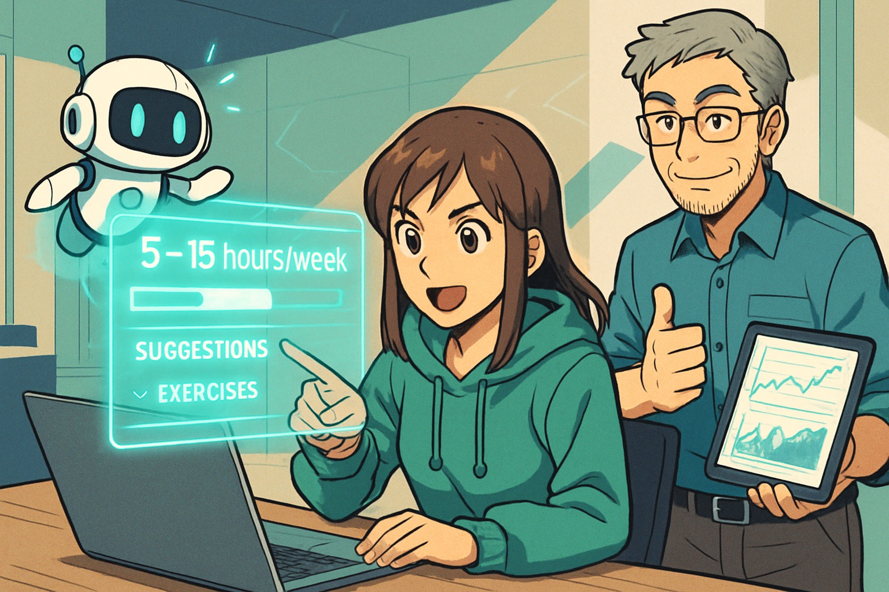

A coding assistant that teaches, reviews, and tracks—so seniors see real progress and juniors deliver value sooner.
Real‑time explanations, best‑practice hints, and code examples keep juniors moving—just like a patient mentor at their side.
Continuous checks flag issues early, so juniors learn the why behind every improvement.
Track wins, blockers, and time‑to‑resolution—giving seniors the data they need to coach strategically, not reactively.
2×
Faster Mentor Ramp‑Up
8 hrs
Senior Time Saved / Week
95%
Issues Caught Before PR

See how mentor‑grade guidance turns potential into productivity.